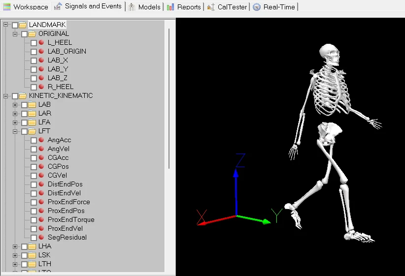
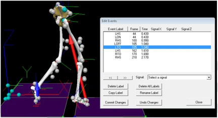
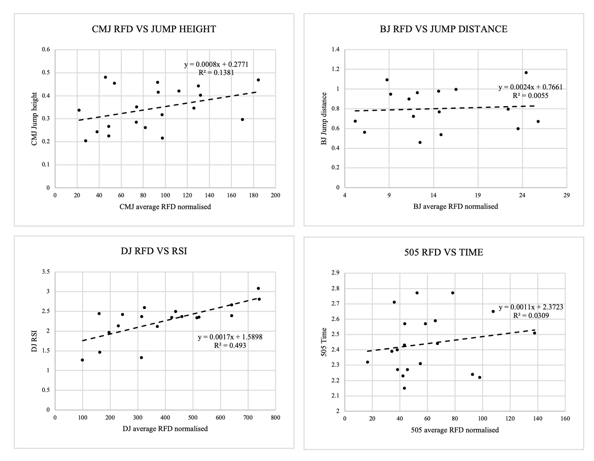

Do jump tests tell you how well an athlete brakes?
Coaches often use jump tests to judge braking ability. I tested that assumption with motion capture and force plates. Eccentric rate of force development (RFD) from jumps did not reflect braking RFD in a 180° change of direction.
- Athletes
- 20 BUCS athletes. 12 male, 8 female
- Sports
- Rugby union, lacrosse, tennis, football, netball
- Kit
- 12-camera Qualisys, 4 Kistler force plates at 2000 Hz
- Supervisor
- Dr Adam Brazil, University of Bath, 2026
Braking is the hardest part of a 180° turn.
In a 180° change of direction (COD), slowing down fast enough is the main mechanical constraint on performance. Eccentric RFD, how quickly an athlete can produce braking force, sits at the centre of that.
Jump tests such as the countermovement jump (CMJ) and drop jump (DJ) are quick and common, so coaches use them to infer braking ability. But no study had directly compared force-plate eccentric RFD from jumps with force-plate braking RFD in a 505 test.
- Does eccentric RFD in the CMJ, DJ and broad jump (BJ) correlate with braking RFD in the 505 plant step?
- Do athletes with higher eccentric RFD have faster 505 times?
- Do fast and slow performers differ in eccentric RFD across tasks?
Four tasks, one lab session per athlete.
Each athlete completed three CMJs, drop jumps from a 20 cm box and broad jumps in a randomised order, then the 505 test three times on each leg with a 5 m run-in, timed with gates.
Vertical force was used for the CMJ and DJ. Horizontal force was used for the BJ and the 505 plant step, where braking happens.


Jump RFD did not track braking RFD.
Every jump-to-505 relationship tested
Correlation coefficient for each comparison. Filled navy dot = statistically significant (p < 0.05). Values from the submitted dissertation.
Fast and slow performers (median split at 2.42 s) did not differ significantly in any RFD variable.
Only the drop jump tracked its own outcome.
Eccentric RFD explained about half the variation in drop jump RSI (R² = 0.49). For the CMJ, broad jump and 505, RFD explained very little of the outcome. The quality is real, but it is specific to the movement.

Average eccentric RFD normalised to body mass on each x-axis.
What this means for practitioners.
Eccentric RFD is task-specific. A good jump score does not mean an athlete brakes well. To profile and train braking, use COD-specific force-plate metrics, including horizontal braking impulse.
Why the mismatch? Jumps are bilateral and mostly vertical. Braking in a 505 is unilateral, horizontal and shaped by technique such as trunk lean, foot placement and approach speed.
What I'd do differently.
- A pre-planned 505 in the lab does not capture spontaneous braking in a match.
- CMJ eccentric RFD showed only moderate trial-to-trial reliability, which can weaken correlations.
- Broad jump distance was predicted from force and centre of mass data, not measured directly.
- RFD is one component of COD. Next time I would analyse braking impulse and the wider physical profile alongside it.